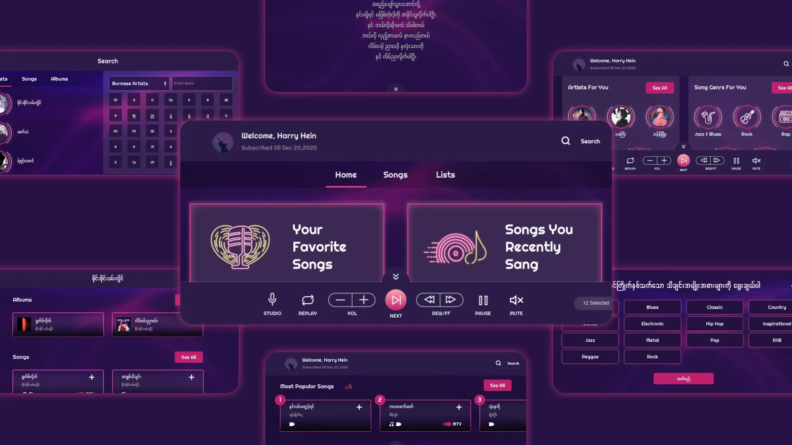
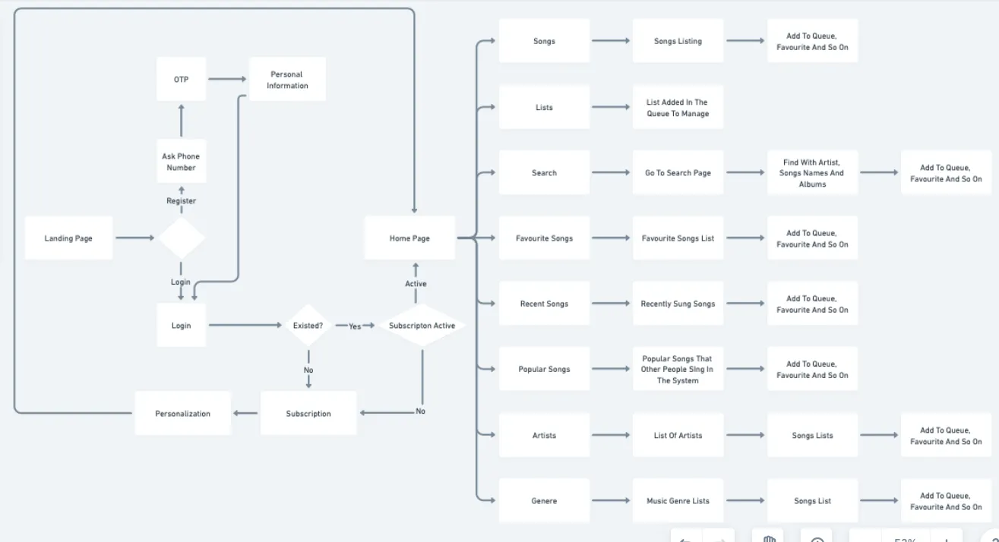
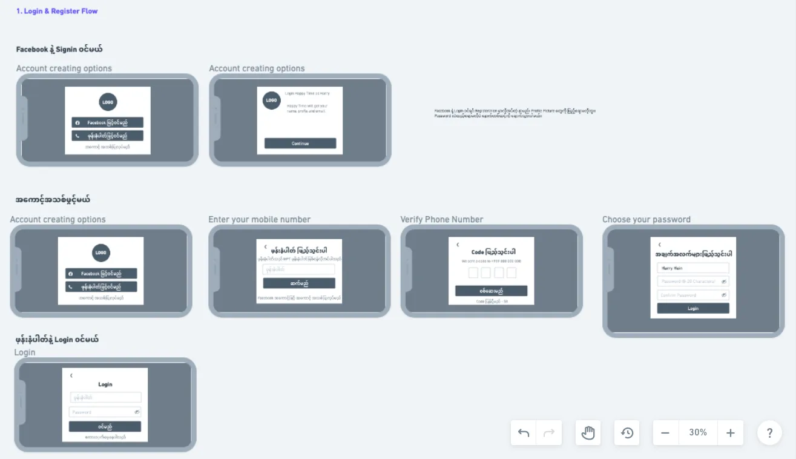

COVID shut down every karaoke bar in Myanmar. We built the stage back — inside their phones.
Karaoke bars closed across Myanmar. Lockdown didn't just take away entertainment — it took away the place where people went to decompress, connect, and feel something together.
"I miss singing with friends... lockdown is so boring. I need social entertainment at home."
— Research participant, YangonDigital alternatives existed — but none for this market. Foreign apps lacked Myanmar songs, couldn't accept local payments, and felt nothing like the bar experience people craved.
Myanmar had no localized karaoke app. The gap wasn't just a product gap — it was a cultural one.
We interviewed karaoke enthusiasts, casual singers, and music lovers across four research phases. We weren't looking for feature requests — we were looking for emotional patterns.
Three themes emerged immediately:
Amid the qualitative insights, three data points crystallized our design direction. Each one eliminated a debate and replaced it with a decision:
65% search by artist first — so we made artist search the default entry point. Friction dropped immediately.
70% have a favourite genre — a clear signal for personalization. The home screen could surface relevant content from day one.
85% use KBZ Pay — Myanmar's dominant payment method. Skip it and you lose the market. We made it the primary checkout option.
We studied three established karaoke platforms — not to copy, but to extract principles we could adapt to a resource-constrained, localized MVP.
Every competitor validated the same insight from our research: the emotional experience matters more than technical features. But none of them served Myanmar's language, payment systems, or music catalogue.
With limited dev resources and a market window closing fast, every feature had to earn its place. We split the backlog into three buckets:
| Keep | Cut | Future |
|---|---|---|
| Basic karaoke + artist search | Social rooms | Multiplayer |
| Subscription + KBZ Pay | Video recording | Community challenges |
| Song feedback | Advanced recommendations | AR effects, Live streaming |
Social rooms were the hardest cut. Our research showed community was central to the karaoke experience. But the engineering cost was 3x the entire MVP budget. We deferred it — and designed the architecture so it could be added without a rewrite.
The user flow had to feel effortless — from opening the app to singing the first note. We mapped every decision point, every potential drop-off, and optimized for the shortest path to music.

The critical insight: onboarding had to end with a song, not a settings screen. Users needed to feel the product's value within 60 seconds of opening it.
Low-fidelity wireframes let us test layout assumptions before investing in visual design. We iterated through three rounds with the team, validating navigation patterns and content hierarchy.

Artist search lived front and center. Genre filters sat one tap away. The singing screen stripped away everything except lyrics and controls — protecting the emotional flow we'd identified in research.
The visual direction drew from karaoke bar aesthetics — electric accents, dark backgrounds, playful typography, high contrast. The goal: make the phone screen feel like a stage.
Pens & Paper for initial sketches. Miro + Whimsical for flows and architecture. Sketch for hi-fi screens. Collaborative critique with distributed teams via Viber & Zoom.
Every color choice, every animation timing, every transition was tested against one question: does this make the user feel like they're performing — or just using an app?
Making artist search the default entry point was one decision. But it cascaded through the entire feature set — search results, recommendations, onboarding flow. One good default freed up cognitive load across millions of taps.
KBZ Pay wasn't a nice-to-have. It was the conversion gateway. In emerging markets, payment choice is make-or-break. Skip the dominant local method and you're building for a market you'll never reach.
A tight timeline forced MVP rigor. The features we cut taught us as much as the ones we built. Social rooms were the right feature — just not the right feature for v1.
Open to senior roles in product and UX. Looking for a team that ships things and cares whether they work.